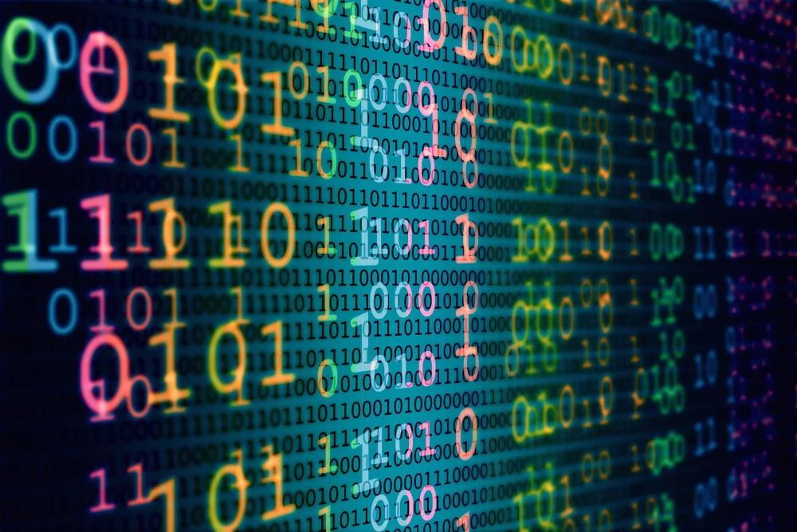

⬇Binary Bonanza⬇ scroll naar beneden voor de uitleg!
Het binair stelsel is dé taal die computers gebruiken voor alles wat je op een computer doet en ziet. Alles op een computer is gebouwd in binaire taal, alleen zie je dat zelf niet. Op deze pagina gaan we er juist wel naar kijken!
Het binair stelsel gebruikt geen letters zoals wij dat doen. Het maakt uitsluitend gebruik van twee cijfers: de 1 en de 0. Alles wat je ziet op een beeldscherm bestaat achter de schermen uitsluitend uit ééntjes en nulletjes. En niet alleen dat, ook je favoriete liedje op Spotify of op een cd bestaat uit heel veel nulletjes en ééntjes. Computers zetten namelijk alles om naar ééntjes en nulletjes om zo te kunnen communiceren met andere computers, als wij die informatie vervolgens op ons scherm of uit onze speakers krijgen wordt het gelukkig voor ons omgezet naar 'onze' taal.

Je hebt dus maar twee getallen om alle getallen te moeten maken. Dit werkt zo: om binair te rekenen heb je de volgende reeks getallen nodig: 1 - 2 - 4 - 8 - 16 - 32 en zo verder. Dit kan oneindig door gaan en wordt dus steeds vermenigvuldigd met 2. Vervolgens heb je die eentjes en nulletjes. Een 0 staat voor 'niet' en een 1 voor 'wel'. Wil je dan bijvoorbeeld het getal 4 krijgen, dan wordt dat 001. Want kijk maar weer eens naar die reeks getallen. De 1 het je niet nodig, dus dat wordt 0 (niet), de 2 ook niet dus dat wordt ook 0 (niet), maar de 4 is het getal dat we nodig hebben dus dat wordt 1 (wel). Die drie samen wordt dus 001. Oké, dit was een erg simpel voorbeeld. Je kan ook gaan rekenen met binaire getallen. Als je bijvoorbeeld het getal 15 wilt hebben dan wordt het binaire getal 1111. Want immers: 1 + 2 + 4 + 8 = 15. Hier kan je zelf mee oefenen in Binary Bonanza, wat ook op deze pagina staat.
Maar aan alleen cijfers hebben we natuurlijk niet zo veel. Om bijvoorbeeld een website te laten zien heb je ook letters nodig. Gelukkig kan dat ook met binaire taal! Hier hebben we de ASCII tabel voor. Hierin kan je makkelijk letters en tekens opzoeken en kijken welke cijfers daarbij horen en dat kan je dan weer vertalen naar ééntjes en nulletjes. De tabel staat hiernaast. Mijn naam, Pim, wordt dan in cijfers P= 80, I = 105, M = 109. Omgerekend naar binair wordt dat 01010000 01101001 01101101. Probeer het zelf ook eens!
Wil je een letterlijk kinderlijk eenvoudige uitleg? Dan is hier een goed filmpje: